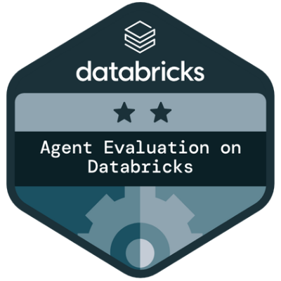
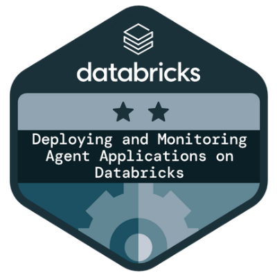
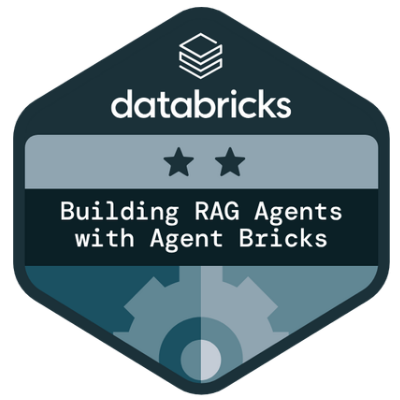
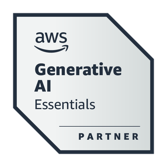
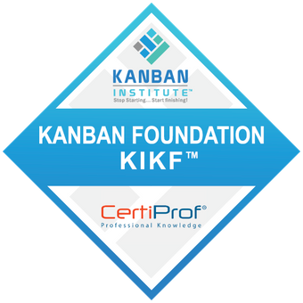
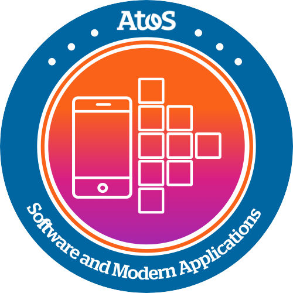
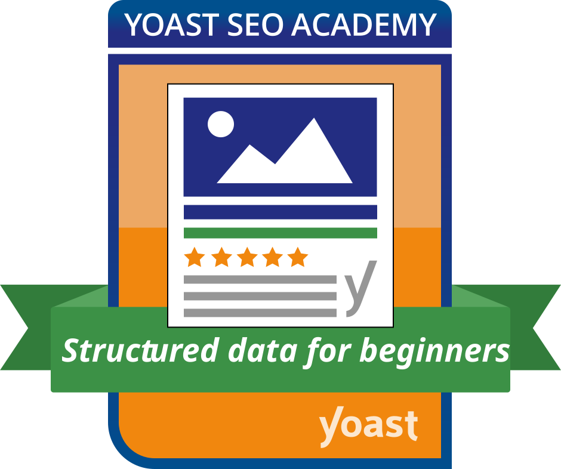
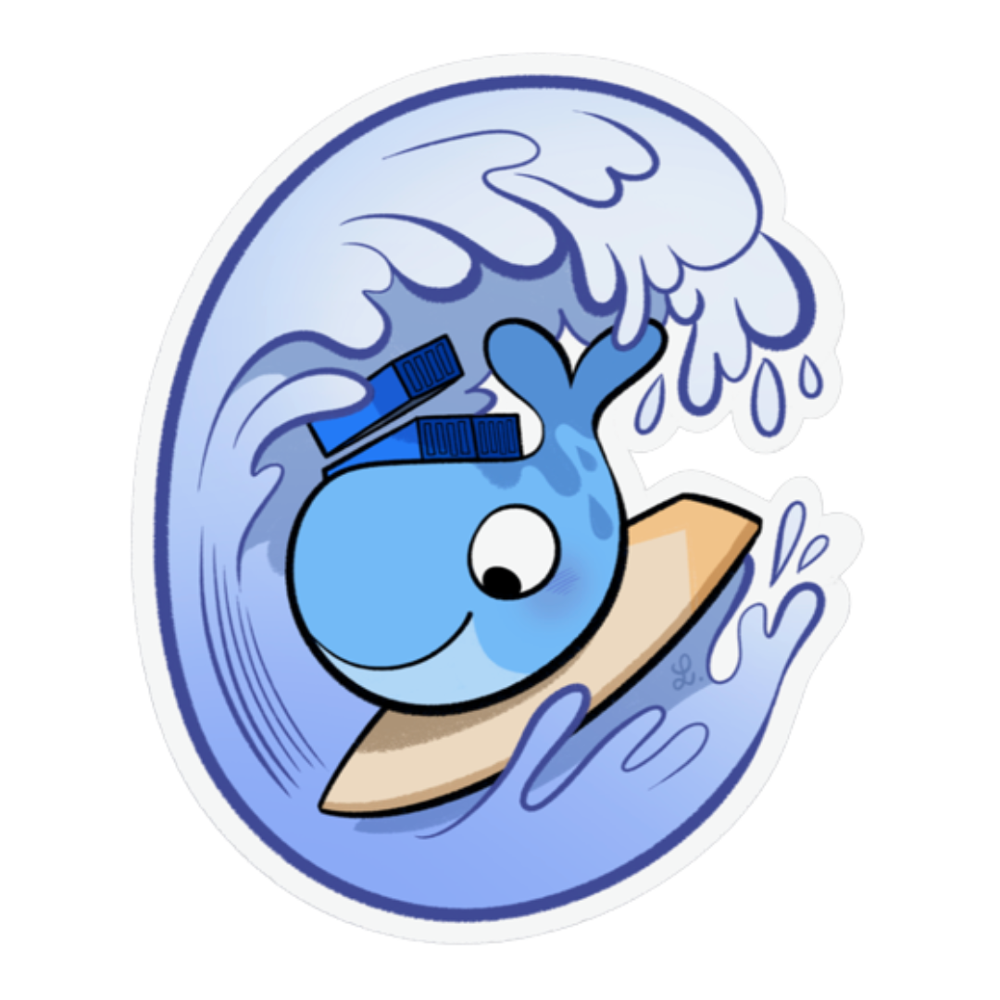

Credenciais Verificadas
Badges & Certificações Internacionais
Reconhecimento oficial em Inteligência Artificial, Desenvolvimento Low-Code, Metodologias Ágeis, Segurança e Qualidade.
Building Agentic Applications on Databricks
 Mendix Rapid
Cybersecurity
Scrum SFPC
Mendix Rapid
Cybersecurity
Scrum SFPC

Agent Evaluation on Databricks
Deploying and Monitoring Agent Applications on Databricks
Building RAG Agents with Agent Bricks
AWS Gen AI
Kanban KIKF
Atos AI / ML

Modern Apps
Ways of Working

Structured Data
Docker